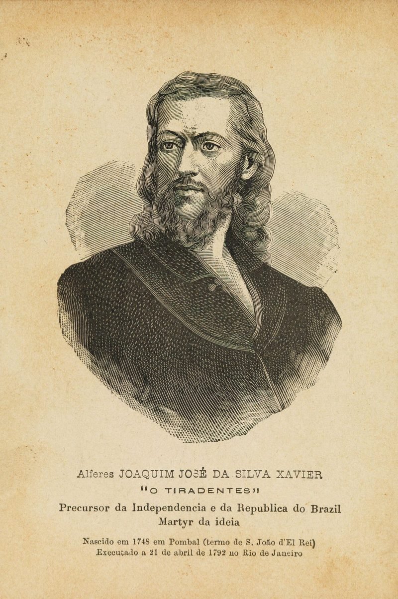
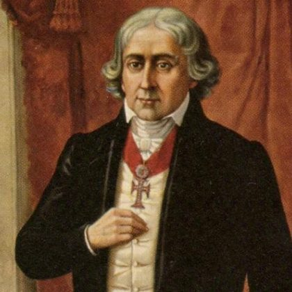
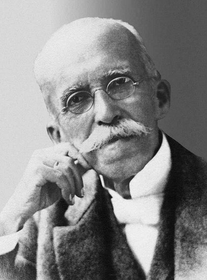
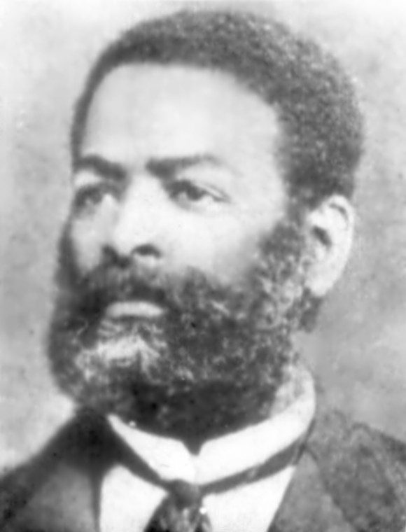

Descubra a Maçonaria
A Maçonaria é uma instituição filantrópica, iniciática e filosófica que reúne homens de boa vontade, independentemente de suas origens, crenças religiosas ou posição social. Aberta e transparente, a maçonaria trabalha pelo aperfeiçoamento moral e intelectual da humanidade.
O que é Maçonaria?
A Maçonaria é uma organização de caráter humanitário que pratica a filantropia, cultiva a educação e promove a liberdade de pensamento. Ela reúne homens que compartilham o compromisso com princípios éticos universais: liberdade, igualdade e fraternidade.
Características principais:
- Livre: Aberta a homens de todas as crenças e origens que compartilhem bons princípios
- Igualitária: Todos os membros possuem voz e voto; as diferenças sociais dissolvem-se no templo
- Transparente: Nada é secreto em termos de propósito e ações; trabalha à luz do dia
- Filantrópica: Dedicada ao bem comum e ao alívio do sofrimento alheio
- Educativa: Promove educação moral, intelectual e espiritual contínua
História da Maçonaria
As origens da Maçonaria moderna remontam ao século XVII em Londres, com a fundação da Grande Loja da Inglaterra em 1717. Contudo, suas raízes filosóficas mergulham na tradição de construção das grandes catedrais medievais, onde operários livres (masons) compartilhavam conhecimentos e princípios de irmandade.
A Maçonaria moderna se desenvolveu como movimento filosófico do Iluminismo, atraindo intelectuais, artistas e homens públicos que acreditavam na razão, na educação e na transformação social. Expandiu-se globalmente e, no Brasil, está presente desde o século XVIII, contribuindo significativamente para o desenvolvimento do país.
No Brasil, a maçonaria teve papel fundamental na independência, na abolição da escravatura e na democracia. O Grande Oriente do Brasil (GOB), fundado em 1822, é uma das obediências maçônicas mais antigas e influentes do mundo.
O Rito de York
O Rito de York é uma forma de trabalho maçônico que busca reconstruir a prática inglesa do século XVIII. Praticado globalmente, é reconhecido por sua clareza, sobriedade e fidelidade aos princípios originais da Maçonaria.
Características:
- Estrutura clara dos três graus: Aprendiz, Companheiro e Mestre
- Ritualística bem definida e padronizada
- Ênfase na educação moral e no aperfeiçoamento pessoal
- Trabalho baseado em símbolos da construção (esquadro, compasso, nível, prumo)
- Abertura para reflexão e estudo contínuo
O Arco Real (Royal Arch)
O Arco Real é considerado a culminação da Maçonaria simbólica, complementando o grau de Mestre Maçom dentro da tradição do Rito de York. Muitas vezes descrito como "o Complemento Sublime da Maçonaria", aprofunda temas de busca, descoberta e restauração.
Características:
- Continuação direta da jornada iniciada nos três graus simbólicos
- Ênfase em temas de reconstrução, perseverança e verdade
- Praticado em capítulos organizados dentro da estrutura do Rito de York
- Aprofunda o simbolismo e a reflexão moral apresentados na Maçonaria Azul
Cavalaria Maçônica (Rito de York)
Os graus de Cavalaria fazem parte da tradição do Rito de York, inspirados nos ideais das antigas ordens de cavalaria medievais: honra, coragem, lealdade e fé. Representam uma etapa avançada de desenvolvimento pessoal e espiritual dentro da jornada maçônica.
Características:
- Inspiração nos valores cavalheirescos históricos: honra, defesa da fé e proteção aos vulneráveis
- Organizados em Comendarias dentro da estrutura do Rito de York
- Aprofundam princípios de disciplina pessoal e compromisso com causas maiores
- Complementam a formação iniciada no Arco Real e nos graus simbólicos
Perguntas Frequentes
A Maçonaria é uma religião?
Não. A Maçonaria respeita todas as religiões e reúne homens de diferentes crenças. Ela é uma instituição filosófica e filantrópica que promove valores éticos universais, não substituindo ou competindo com religiões organizadas.
Como se torna um maçom?
Um homem que deseja ingressar na Maçonaria deve apresentar uma petição a uma Loja, ser recomendado por membros já filiados e passar por um processo investigativo. Após aprovação, será iniciado nos graus (Aprendiz, Companheiro e Mestre) através de cerimônias ritualísticas que marca etapas de desenvolvimento pessoal.
Quais são os objetivos da Maçonaria?
A Maçonaria trabalha para o aperfeiçoamento moral e intelectual de seus membros e contribui para o bem comum através de projetos sociais. Promove educação, filantropia, e a construção de uma sociedade mais justa, igualitária e fraterna.
A Maçonaria é elitista?
Não. Apesar de selectiva (a Maçonaria analisa cuidadosamente os candidatos para preservar a qualidade moral da Loja), ela é fundamentalmente igualitária. Nela, um pedreiro e um executivo são irmãos com os mesmos direitos, deveres e respeito.
Qual é a relação entre Maçonaria e política?
A Maçonaria como instituição é apolítica. Porém, promove valores éticos que impactam naturalmente a vida cívica de seus membros. Maçons participam da política como cidadãos responsáveis, sempre buscando servir ao bem comum.
Como visitar uma Loja?
Visite a Loja Maçônica Águas Claras nº 4380. Visitantes de outras Lojas são bem-vindos em nossas sessões. Entre em contato conosco para confirmar presença e tirar dúvidas.
Maçons Brasileiros e no Mundo
A Maçonaria atraiu e continua atraindo homens de excelência que contribuem para a transformação social. Muitos personagens históricos foram maçons, deixando legado de integridade e compromisso com a humanidade.
Destaque: Maçons Brasileiros

Tiradentes
Líder da Inconfidência Mineira, símbolo de luta pela liberdade e independência brasileira.

José Bonifácio
Patriarca da Independência, deputado e estadista que moldou as instituições brasileiras.

Ruy Barbosa
Jurista, jornalista e político; defensor da Abolição, da República e da Constituição.

Luiz Gama
Advogado, abolicionista e poeta que libertou centenas de escravizados pela lei.
Maçons Históricos no Mundo
Benjamin Franklin
Cientista e diplomata americano, um dos fundadores dos EUA.
Wolfgang Amadeus Mozart
Compositor austríaco que celebrou a fraternidade em sua ópera "A Flauta Mágica".
Harry Truman
33º Presidente dos EUA, maçom de destaque no século XX.
Albert Einstein
Físico teórico revolucionário que defendia educação e humanismo.